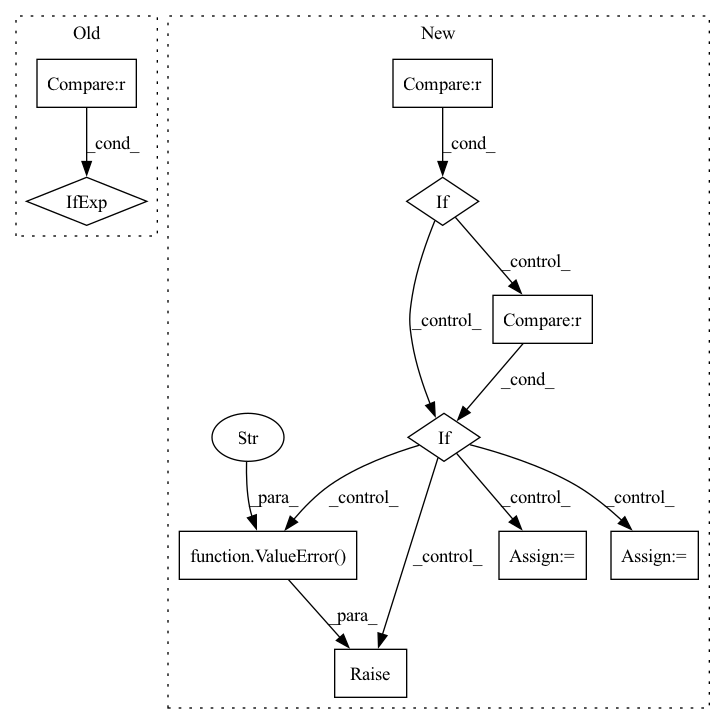

Pattern ID :19272
Before Change
f"Can only merge KJTs of the same stride ({a.stride()}, {b.stride()})."
)
length_per_key = (
a._length_per_key + b._length_per_key
if a._length_per_key is not None and b._length_per_key is not None
else None
)
return KeyedJaggedTensor(After Change
length_list: List[torch.Tensor] = []
for kjt in kjt_list:
if kjt.stride() != stride :
raise ValueError(
f"Can only merge KJTs of the same stride ({stride} != kjt.stride())"
)
curr_is_weighted: bool = kjt.weights_or_none() is not None
if is_weighted != curr_is_weighted :
raise ValueError("Can"t merge weighted KJT with unweighted KJT" )
if kjt._length_per_key is None:
has_length_per_key = False
if has_length_per_key:
// pyre-ignore[6]
length_per_key += kjt._length_per_key
keys += kjt.keys()
value_list.append(kjt.values())
if is_weighted:
weight_list.append(kjt.weights())In pattern: SUPERPATTERN
Frequency: 4
Non-data size: 10
Instances Fragment ID: 62728125
Project Name: pytorch/torchrec
Commit Name: 6da4b4cb052ecd1ef67d6af01097f0e3f85b2ea5
Time: 2022-06-21
Author: bigning@fb.com
File Name: torchrec/sparse/jagged_tensor.py
M Class Name: KeyedJaggedTensor
N Class Name: KeyedJaggedTensor
M Method Name: concat(1)
N Method Name: concat(2)
M Parent Class: Pipelineable
N Parent Class: Pipelineable
M File Name: torchrec/sparse/jagged_tensor.py
N File Name: torchrec/sparse/jagged_tensor.py
M Start Line: 739
M End Line: 750
N Start Line: 739
N End Line: 774
Before Change
quantizer_channels = extract_channels[-1]
post_quantizer_channels = context_channels[-1]
extra_args = (
{"num_residuals": quantizer_num_residuals}
if quantizer_type == "rvq"
else {}
)
self.quantizer = Quantizer1d(After Change
quantizer_channels = extract_channels[-1]
post_quantizer_channels = context_channels[-1]
if self.quantizer_type == "timewise" :
self.quantizer = Quantizer1d(
channels=quantizer_channels,
num_groups=quantizer_groups,
codebook_size=codebook_size,
expire_threshold=quantizer_expire_threshold,
num_residuals=quantizer_num_residuals,
)
elif self.quantizer_type == "channelwise" :
assert_message = "quantizer_split_size required with channelwise type"
assert quantizer_split_size is not None, assert_message
self.quantizer = QuantizerChannelwise1d(
channels=quantizer_channels,
split_size=quantizer_split_size,
num_groups=quantizer_groups,
codebook_size=codebook_size,
expire_threshold=quantizer_expire_threshold,
num_residuals=quantizer_num_residuals,
)
else:
raise ValueError("Quantizer type must be timewise or channelwise" )
self.post_quantizer = nn.Sequential(
ResnetBlock1d(
in_channels=quantizer_channels, Fragment ID: 62727964
Project Name: archinetai/audio-diffusion-pytorch-trainer
Commit Name: d95282a5569b4aecd3bd9a11e751ecf659093bde
Time: 2022-09-09
Author: flavio.schneider.97@gmail.com
File Name: main/module_diffqe.py
M Class Name: Model
N Class Name: Model
M Method Name: __init__(38)
N Method Name: __init__(38)
M Parent Class: pl.LightningModule
N Parent Class: pl.LightningModule
M File Name: main/module_diffqe.py
N File Name: main/module_diffqe.py
M Start Line: 58
M End Line: 107
N Start Line: 63
N End Line: 116
Before Change
// build first step conv 1x1.
self.conv_list.append(ConvBNReLU(in_channels, out_channels // 2, kernel_size=1, bias=False))
// avg pool in skip if stride = 2.
self.skip_step1 = nn.AvgPool2d(kernel_size=3, stride=2, padding=1) if stride == 2 else nn.Identity()
in_channels = out_channels // 2
mid_channels = in_channelsAfter Change
// build first step conv 1x1.
self.conv_list.append(ConvBNReLU(in_channels, out_channels // 2, kernel_size=1, bias=False))
// build skip connection after first convolution.
if stride == 1 :
self.skip_step1 = nn.Identity()
elif stdc_downsample_mode == "avg_pool" :
self.skip_step1 = nn.AvgPool2d(kernel_size=3, stride=2, padding=1)
elif stdc_downsample_mode == "dw_conv":
self.skip_step1 = ConvBNReLU(
out_channels // 2, out_channels // 2, kernel_size=3, stride=2, padding=1, bias=False, groups=out_channels // 2, use_activation=False
)
else:
raise ValueError(f"stdc_downsample mode is not supported: found {stdc_downsample_mode}," f" must be in [avg_pool, dw_conv]" )
in_channels = out_channels // 2
mid_channels = in_channels
// build rest conv3x3 layers. Fragment ID: 62727952
Project Name: deci-ai/super-gradients
Commit Name: 98083d4303f887cb29f39029871612fe5e2e4753
Time: 2022-11-02
Author: 88616312+lkdci@users.noreply.github.com
File Name: src/super_gradients/training/models/segmentation_models/stdc.py
M Class Name: STDCBlock
N Class Name: STDCBlock
M Method Name: __init__(6)
N Method Name: __init__(5)
M Parent Class: nn.Module
N Parent Class: nn.Module
M File Name: src/super_gradients/training/models/segmentation_models/stdc.py
N File Name: src/super_gradients/training/models/segmentation_models/stdc.py
M Start Line: 34
M End Line: 43
N Start Line: 29
N End Line: 53